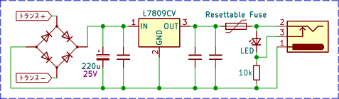

Caline CP-205 改造
2023年07月14日 カテゴリー：修理・改造・解析
アイソレート式のパワーサプライは電源として持っておくと便利そうなので、試しに低価格で改造しやすそうなCaline CP-205を購入しました。2023年3月に設計された基板のようです。
トランスでグラウンドが分離されています。CL205表記のICやCP205表記のトランスは特注品だと思われます。同様のアイソレート型パワーサプライについて下記ページでも解説されていますので、合わせてご参照ください。
・GOKKO MANTRA ISOLATED POWER SUPPLY GK-54
・MXR mini iso-brickの解析
上記リンク記事内にもありますが、VITOOSという中国のメーカーが多くのパワーサプライのOEMを受託しているようです。Vital Audio : パワーサプライ開発の裏側というページの画像で、ICや基板に「VITOOS」の印字が見えます。strymonのパワーサプライについては完全に自社設計で、技術白書：エフェクター電源に関する白書に説明が記載されています。
【測定】
実際どの程度のノイズがあるのか測定してみます。オシロスコープでは微小ノイズの測定は無理があると考え、オーディオインターフェイスUR22Cに入力しました。UR22Cの入力部にもカップリングコンデンサがあると思われますが、念のため1μFのコンデンサを介して接続しています。
安直な手法ですが、ファズフェイス等を使う時には似たような接続になるので、全く的外れというわけでもないと思います。スイッチングノイズは96kHzまでなら観測できます。
他のACアダプタやパワーサプライも一緒に測定しました。おおよその負荷は46Ω（196mA）または300Ω（30mA）です。実際にエフェクターに使用した際に差が出るかどうかは不明ですが、低ノイズなのに越したことはないかと思います。
- CLASSIC PRO DC9V05ANS（196mA）
サウンドハウスでエフェクターを購入した時無料でついてきたものです。全体的にノイズが多めのようです。
- BOSS PSA-100（196mA）
経年劣化がある可能性もありますが、ノイズがそれなりにあります。BOSSはエフェクター側でノイズ対策されているので問題ないということかもしれません。
- スイッチングACアダプタ GF12-US1210 + 3端子レギュレータ NJM7809（196mA）
長年使っている自作パワーサプライです。今まで特に不満はなかったので、充分低ノイズだと思います。
- Caline CP-205（196mA）
ポートによってはもっとスイッチングノイズが少なくなっています。格安とは思えない性能です。
- VOODOO LAB Pedal Power 2 Plus 旧型（30mA）
旧型、ジャンク修理品なので現行品とは異なる可能性があります。特に低ノイズですが、商用電源の60Hzの倍数のノイズは乗りやすいようです。
- GP アルカリ電池（30mA）
測定限界と同じとなります。充電式電池 IMPULSE 6P形でも同じレベルでした。
下記ページでもパワーサプライのノイズ測定がされていますが、測定条件がよくわからないので比較はできそうにありません。
・そのノイズ、電源のせいかも？ギタリストが知っておくべき、ノイズの原因とは。
CP-205のトランス以降の回路は以下のようになっています。

トランス二次側の波形は下図です。※測定器ADALM2000の最大定格を超えないよう10分の1で測定しています。
スイッチング周波数は約36kHzです。18Ω負荷（500mA）時、トランス直後は27Vp-p、ダイオード整流後は13.4Vp-p程度となっていました。
【改造】
▽回路図
さらにノイズ低減できるのか確認したかったので、リニアレギュレータの重ね掛けをやってみました。L7809CVをそのままこれに置き換えます。出力電圧を可変できる（8.8～9.4V）ようにしたのは、カレントダブラーケーブルを安全に使えるように微調整したかったためです。リセッタブルヒューズをレギュレータの間に入れることで、ロードレギュレーションの改善も望めます。500mA出力ポートには保持電流500mAのリセッタブルヒューズを使います。
シリコンサーマルパッドとねじ止めでフタに取り付けています。ついでに電解コンデンサをルビコン製のものに交換しました。
後から気づきましたが、レギュレータからの熱が伝わってリセッタブルヒューズの抵抗値が上がってしまいます。スペース的に厳しいものの、スルーホールタイプのリセッタブルヒューズを使った方がよいでしょう。1000mAでの稼働では、ケース表面が50度まで上がりました。フルパワーで使うには大きな放熱器が必要です。
ノイズ測定しました。CP-205は同じポートを使用し、レギュレータを入れ替えての結果です。
スイッチングノイズはあまり変化がありませんでしたが、充分な低ノイズを達成できたといってよいでしょう。
---2024年9月28日追記---
500mAのポートのレギュレーターを、LT3045を使った自作モジュールに交換しました。
ほぼ測定限界という低ノイズでした。高価ですが、最高のパワーサプライを作りたい場合には必要だと思います。下記ショップでモジュールが販売されています。
・Strawberry Linux - LT3045-1 超ローノイズ・正電圧レギュレータモジュール